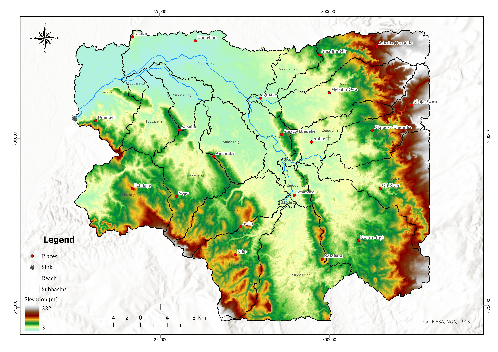
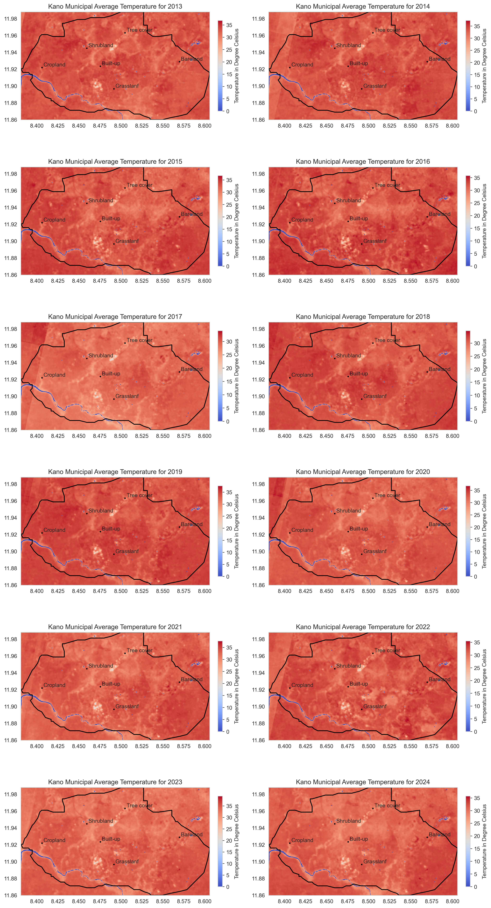

Abdulquawiyy Owolabi
About
Welcome!! I am a passionate graduate of Surveying and Geoinformatics, Obafemi Awolowo University, Nigeria.
My current goal is to utilise spatial data science to inform sustainability-focused initiatives through data-driven insights and nature-based solutions. To achieve this, I specialise in cutting-edge techniques such as remote sensing, spatial analysis, machine learning (ML), and artificial intelligence (AI).
My interests focus on satellite image analysis of changing environments, with a specific interest in climate change, agriculture, and environmental monitoring.
Geoinformatics & Geospatial Data Scientist.
Advancing agriculture and food security through satellite imagery and machine learning.
- Email: ohhuygens@outlook.com
- Phone: +234 915 1486 075
- City: Ile-Ife, Nigeria
- Degree: Bachelor of Science
- Freelance: Available
Skills and Technologies
Education and Experience
Education
Bachelor of Science Surveying & Geoinformatics
Apr, 2018 - Sep, 2025
Obafemi Awolowo University, Ile-Ife, Nigeria.
Experience
Graduate GIS Analyst
Apr, 2025 - Present
Brigmick Global Services, Osogbo, Nigeria
- Prepared technical proposals to ascertain project purpose, needs, and requirements
- Administering efficient and effective technical workflows within the organization for various GIS projects and ensure optimal delivery.
- Delivering training for clients in the use of Software solutions on the ArcGIS and QGIS platforms via instructor-led online/on-premises classes
Research Intern (Geospatial Data Science)
Aug, 2024 - Mar, 2025
GISorb, Remote
- Processed and analysed Synthetic Aperture Radar (SAR) data for oil spill detection and spatial analysis projects
- Utilised Google Earth Engine LandTrendr algorithm to assess agricultural land use changes due to oil spill in the Niger Delta region
- Developed standardised data cleaning procedures to ensure data integrity and quality for geospatial datasets
- Annotated satellite imagery to create training datasets for machine learning model development
- Performed comprehensive literature reviews on advanced geospatial technologies and methodologies
GIS Analyst
Feb, 2022 - Present
Upwork - Freelance
- Consulted with individuals and organizations to deliver tailored geospatial analysis and GIS consulting services.
- Managed and analyzed geospatial datasets to support client projects and objectives.
- Developed data analytics and visualization dashboards to enhance decision-making processes.
- Utilized advanced tools such as ArcGIS, Google Earth Pro, and QGIS to provide comprehensive geospatial insights.
Remote Mapper and Validator
Jan, 2024 - July, 2024
Eco-Smart Cities
- Conducted comprehensive mapping of buildings and features across Nigeria using JOSM.
- Validated over 1000,000 buildings while ensuring the accuracy are within acceptable limits. Contributed to Eco-Smart Cities' mission of promoting sustainable urban development through precise mapping.
Student GIS Analyst Intern
Feb, 2023 - Oct, 2023
SpaceLab Land Surveyors and Geo-Geeks, Osogbo, Nigeria
- 8-month internship on the use of satellite, remote sensing, Geographic Information Systems, and Global Positioning Systems to provide insights for sustainable development.
- Led a group of 3 interns to pre-process 10-year satellite imagery for the River Osun basin assessment and restoration planning.
- Performed digital mapping and hydraulic modelling for over 400 water distribution networks of Osogbo Town.
- Assessed the potential of small hydroelectric power generation within Osogbo and its environs along the River Osun basin.
Internship
Practical Experience and Learning

GISorb
Geospatial Data Science Research Intern (Feb, 2023 - Oct, 2023)
My 9-month (remote) internship was carried out at GISorb, from the 14th of August 2024 to the 30th of April 2025. During my time at the firm, I was exposed to geospatial analysis, and I got along with the tasks assigned to me while putting my best effort to achieve the timely and expected result.
My primary responsibilities include the following:
- Collection of geospatial data, especially Synthetic Aperture Radar (Sentinel-1 GRD)
- Preparation of SAR data (calibration, geometric correction, etc.) in SNAP for oil spill detection
- Annotated satellite imagery to create training datasets for machine learning model development
- Utilized Google Earth Engine LandTrendr algorithm to assess agricultural land use changes due to oil spill in the Niger Delta region
- Performed comprehensive literature reviews on advanced geospatial technologies and methodologies
GISorb handled many projects which involved environmental impact studies, like oil spill monitoring in the Niger Delta region of Nigeria, ecology assessment, like mangrove ecosystems. I was fully involved in some of these projects.
Detecting and monitoring of oil spills requires optical and/or radar satellite imagery (Sentinel 1, Sentinel 2, etc.), onsite monitoring of vessels and robust geospatial techniques like machine learning. The mission tasking requires the satellite to capture imagery of a location at a stipulated time. The acquired satellite imagery was radiometric calibration, speckle-filtered, and geometric correction in SeNtinel Application Platform (SNAP). The processed images (up to 100 diffrent scenes) were then tilled (using python script) in Jupyter Notebok. The tilled images were then annotated (to extract ships, land, sea look-alike, oil spill features) in ArcGIS Pro using the Label Objects for Deep Learning tool to create training datasets for machine learning model development throughout the study area that covers the Niger-Delta region of Nigeria. The annotated images were then exported to train machine learning models (Random Forest, Support Vector Machine) in Python to detect oil spill areas. The results were then validated with ground truth data.
To assess land use changes potentially associated with oil spills in the Niger-Delta region, I utilized the LandTrendr algorithm in Google Earth Engine to analyze land cover dynamics over a multi-decadal period (1999-2024) using Landsat imagery. The analysis involved pre-processing satellite imagery, applying LandTrendr to detect temporal changes in vegetation patterns, and cross-referencing identified change areas with documented oil spill locations. Results were visualized using charts to illustrate the spatial-temporal patterns of agricultural land degradation in oil spill-affected areas.
Additionally, I conducted comprehensive literature reviews on advanced geospatial technologies and methodologies on environmetal complexities like study on mangrove ecosystem, impact of lakes on climate to support ongoing projects and enhance the team's knowledge base. This involved summarizing recent research articles, identifying emerging trends in geospatial analysis, and proposing innovative approaches for future projects.
Through this internship, I have gained practical experience in geospatial data analysis, remote sensing techniques, and the application of geospatial technologies to real-world challenges. This experience has significantly enhanced my skills and knowledge in the field of geospatial data science.
Portfolio
This portfolio highlights the skills and achievements demonstrated through my personal projects

{kind=link}


{kind=link}
{kind=link}
Blogs
Insights and Discoveries
Spectral Indices in Remote Sensing: Meaning and Applications
A spectral index is a mathematical combination of two or more wavelengths that enhances the information content of the data. Spectral indices help extract insights on vegetation, soil moisture, and water quality from satellite imagery..
Apr., 2023
Land Use Classification Using Random Forest and Support Vector Machine
Analysis of Sentinel-2 satellite imagery using machine learning to classify land cover in Iwo LGA, Osun State, Nigeria. Focused on spatial patterns, vegetation insights, and model-based classification.
Mar., 2025
Land Suitability Study for Solar Power Plant in Kano State
GIS and AHP-based multicriteria decision analysis to identify optimal sites for solar farm development in Northern Nigeria.
Jun., 2025